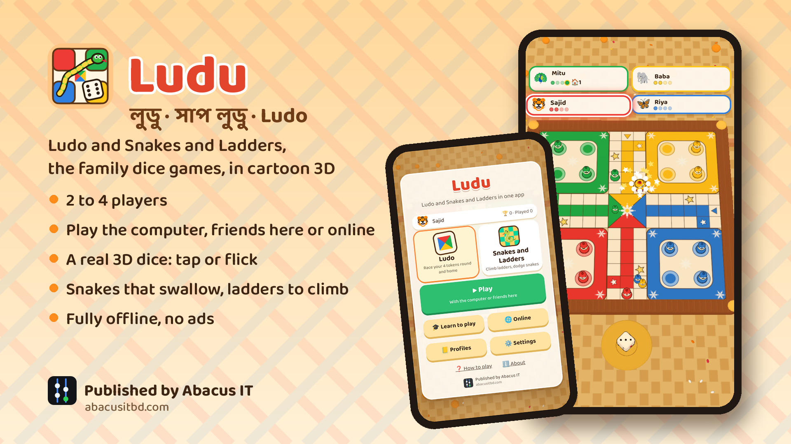
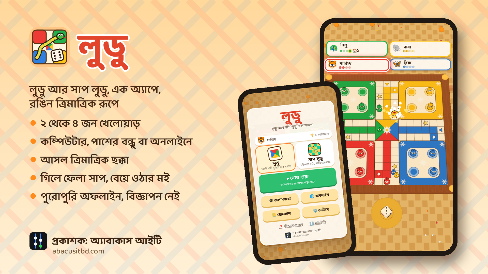
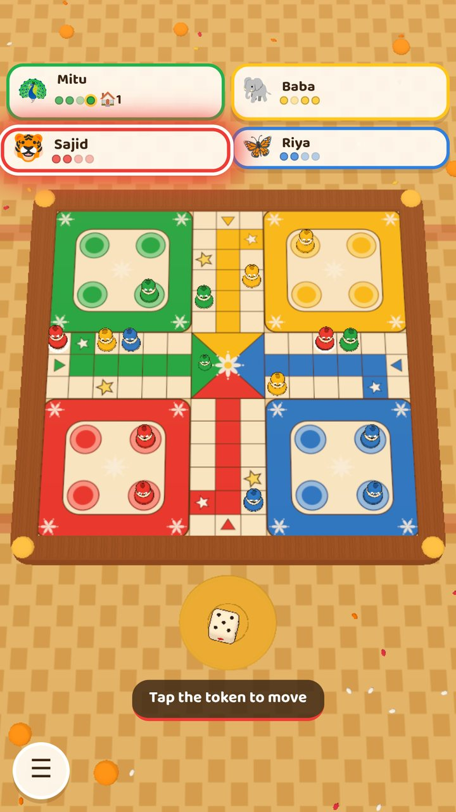
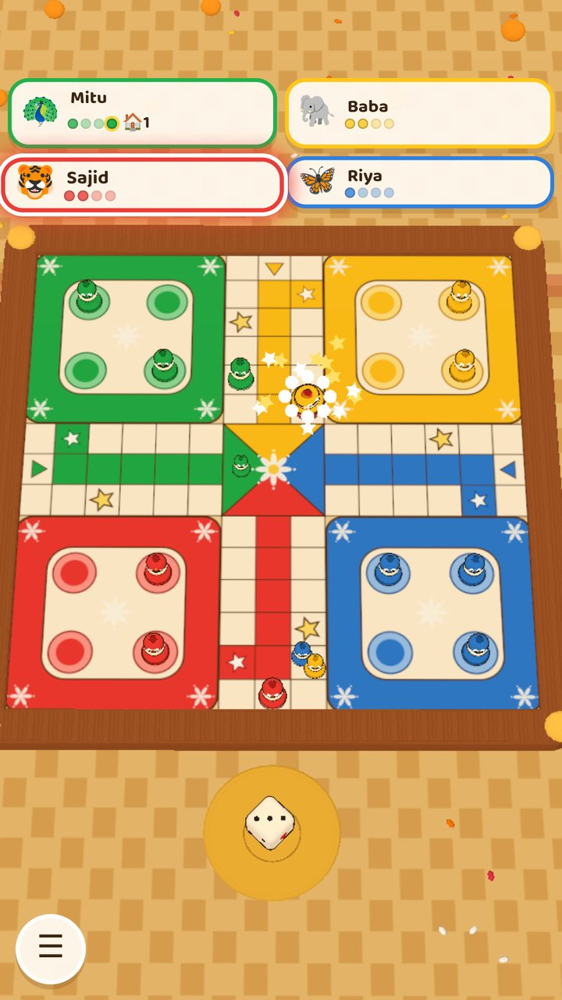
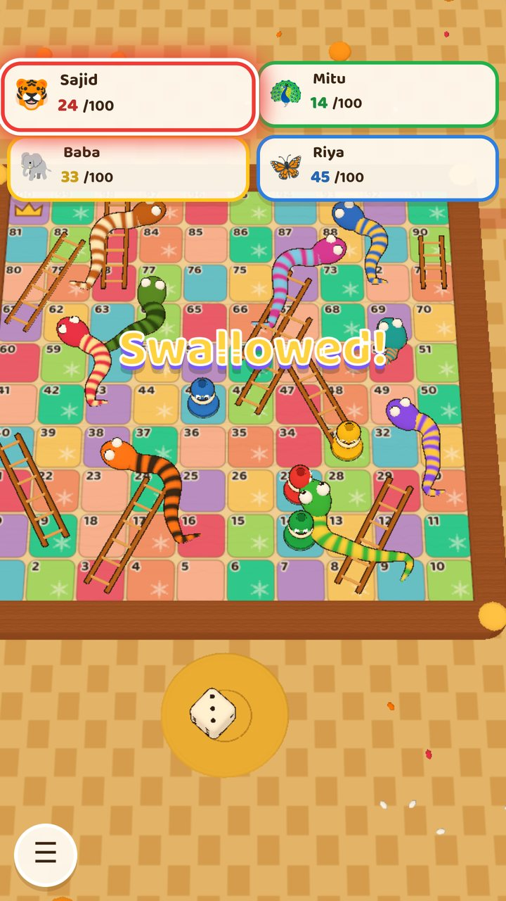
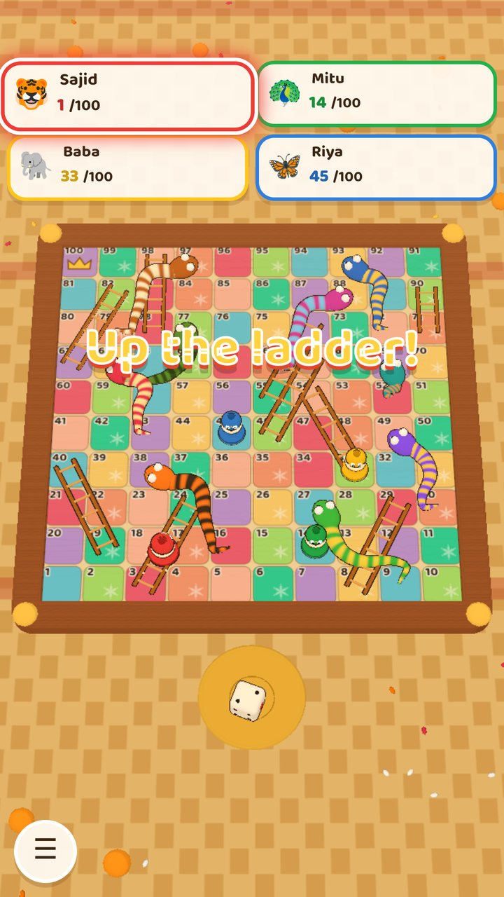
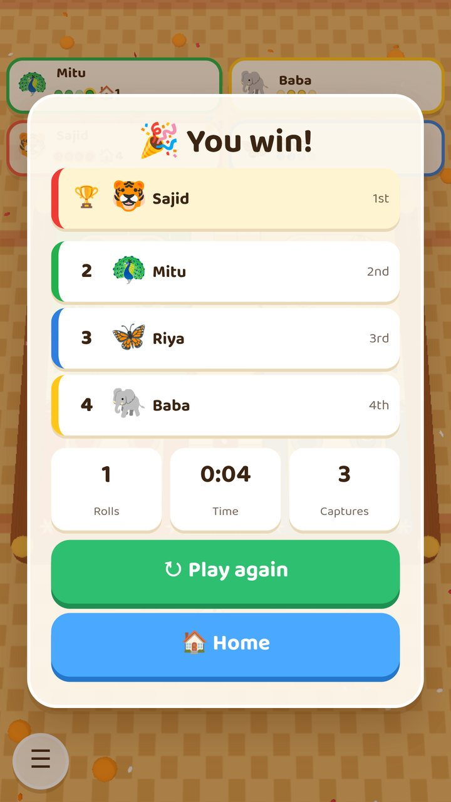
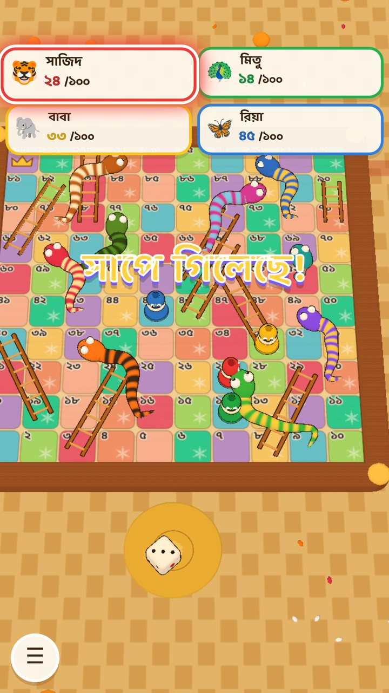
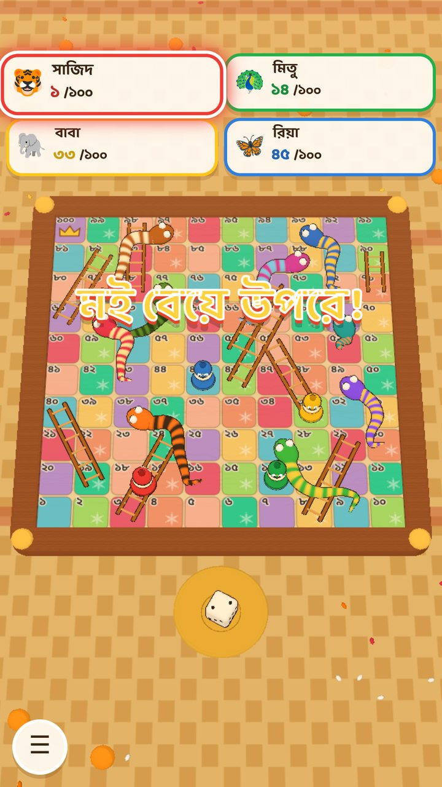
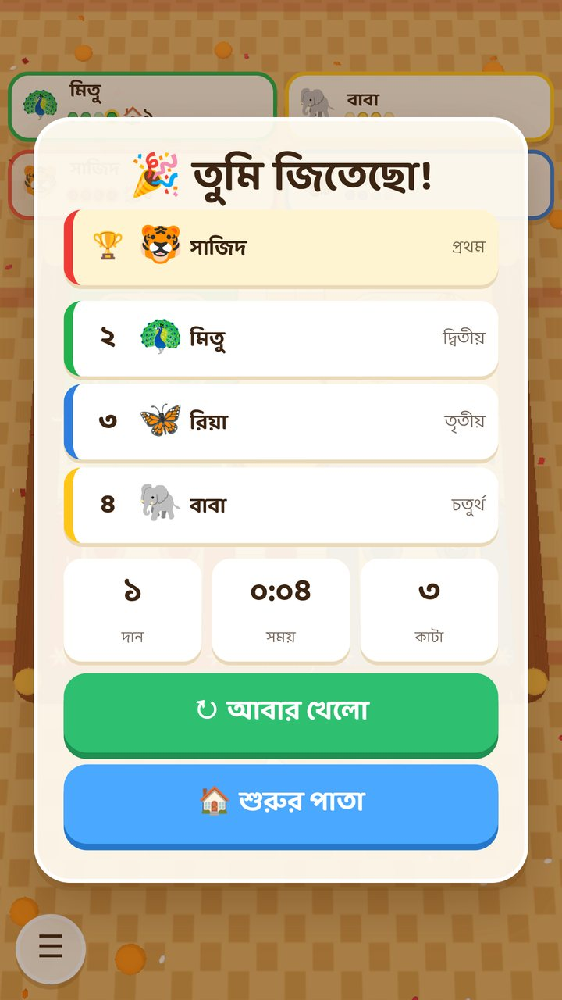

লুডু · Ludo and Snakes and Ladders · the family dice games of South Asiaলুডু আর সাপ লুডু, এক অ্যাপে, রঙিন ত্রিমাত্রিক রূপে










Ludo and Snakes and Ladders are the dice games every family in Bangladesh, India, Nepal, Pakistan and Sri Lanka grew up with: rainy afternoons, Eid and Puja holidays, everyone round the board at grandmother's house. Now both are in bright cartoon 3D.
Ludo: a 6 brings a token out. Move a token as many squares as the dice shows; land on another player's token to send it back home. Star squares are safe. The first to bring all 4 tokens into the middle wins.
Snakes and Ladders: race from 1 to 100. Land on the foot of a ladder and climb; land on a snake's head and slide down to its tail.
লুডু আর সাপ লুডু আমাদের ঘরের খেলা: বৃষ্টির বিকেল, ঈদ আর পূজার ছুটি, নানুবাড়ির উঠোনে সবাই মিলে ছক্কা চালা। এবার দুটো খেলাই রঙিন কার্টুন ত্রিমাত্রিক রূপে।
লুডু: ছক্কা পড়লে গুটি বের হয়। ছক্কায় যত পড়ে তত ঘর এগোও; অন্যের গুটির ঘরে পড়লে সেটা কাটা পড়ে ঘরে ফেরে। তারা আঁকা ঘর নিরাপদ। যে আগে চারটা গুটি মাঝখানে তোলে, সে জেতে।
সাপ লুডু: ১ থেকে ১০০ পর্যন্ত দৌড়। মইয়ের গোড়ায় পড়লে উপরে ওঠো, সাপের মাথায় পড়লে লেজে নেমে যাও।
Also known as: ludo, ludu, ludo game, ludo board game, snakes and ladders, snake and ladder, snakes ladders, shap ludu, sap ludu, saap ludo, sap sidi, saanp seedhi, saap seedi, chutes and ladders, pachisi, parcheesi, chaupar, chaupad, gyan chaupar, mokshapat, paramapadam, vaikunthapali, dice game, board game, family game, 2 3 4 players, offline, bangladesh, india, nepal, pakistan, sri lanka, লুডু, লুডো, সাপ লুডু, সাপ-লুডু, সাপ সিঁড়ি, পাশা, लूडो, लुडो, साँप सीढ़ी, सांप सीढ़ी, साप शिडी, पच्चीसी, चौपड़, मोक्षपट, لوڈو, سانپ سیڑھی, લુડો, સાપ સીડી, ਲੂਡੋ, ਸੱਪ ਪੌੜੀ, ଲୁଡୋ, ସାପ ସିଡ଼ି, லூடோ, பரமபதம், பாம்பு ஏணி, లూడో, వైకుంఠపాళి, పాము నిచ్చెన, ಲೂಡೋ, ಹಾವು ಏಣಿ ಆಟ, ലൂഡോ, പാമ്പും കോണിയും, ලූඩෝ